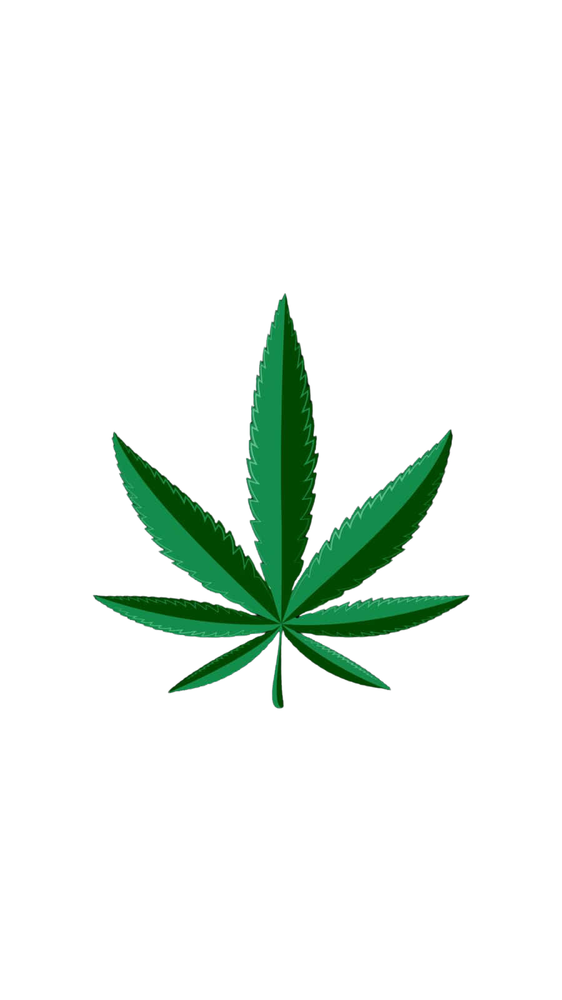

¡DATOS IMPORTANTE!
 El uso de la marihuana, aunque sea para fines medicinales, está prohibido en la República Dominicana, debido
a que según personas, al tema se le da el manejo como un delito y no como una cuestión de salud.
Para el director ejecutivo de la Asociación Casa Abierta, Juan Raddamés de la Rosa, el uso de la marihuana
medicinal es un tema que se debate en todo el mundo y que en los últimos años se ha ido descubriendo que es
una droga blanda que no produce tanto daño como se venía diciendo con anterioridad.
“El mundo ha ido descubriendo que el cannabis tiene dimensiones medicinales y recreativas que la gente la
puede usar sin generar mayores problemas”, explicó el director de Casa Abierta.
Raddamés de la Rosa indicó que en diversos países no es legal el uso recreativo de la marihuana, pero que sí
existen legislaciones que le permiten al sistema de salud utilizar ese vegetal para terapias como la
epilepsia, la esclerosis múltiple, la enfermedad parkinson, entre otros.
Indicó que los legisladores del Congreso Nacional aún no comprenden que a la marihuana se le puede dar un
uso más adecuado y que pudiera ayudar a las personas.
“No se trata de legalizarla para que todos puedan fumar marihuana en una esquina no, se trata de generar
mecanismos legales como otros países lo han hecho”, aclaró de la Rosa.
Indicó que hoy en día a través de la comercialización con fines medicinales de esta sustancia se genera una
industria, empleos y se pagarían impuestos, “es una pérdida del sentido que tenemos acá que seguimos
pensando en la marihuana como una droga perjudicial”.
El ejecutivo de Casa Abierta, un centro especializado en diversos abordajes de la realidad y en la
prevención del uso problemático de drogas y de los factores asociados, dijo que “todas las drogas son
perjudiciales cuando se usan inadecuadamente”, donde incluyó las drogas que son de uso médico y tienen
controles.
Destacó que si en el país hubiera una legislación actualizada permitiría tener una mirada diferente de las
personas que tienen adicciones.
Sostuvo que República Dominicana está anclado en la Ley No. 50-88 sobre Drogas y Sustancias Controladas de
la República Dominicana, la cual definió como atrasada para la actualidad.
“La ley es anticuada y debe cambiar, lo primero que se debe hacer es ver qué ha pasado en sociedades que han
avanzado en otra dirección y esa experiencia nos puede ser útiles para modificar nuestra legislación, para
generar una legislación diferente que tome en cuenta que el uso de sustancias no debe ser un tema de delito,
debe ser un tema de salud y el uso medicinal es otra cosa, que no es lo mismo que el uso recreativo y
debemos aprovecharlo para que el cannabis pueda ser utilizado de manera médica en el país”.
Reiteró que la parte política del país no ve el tema de las drogas como un tema de la sociedad, sino de la
policía y control de la seguridad.
Indicó que a su parecer se debería despenalizar el uso de sustancia, ya que las personas que “consuman no
deben ser procesados judicialmente” y explicó que no se estaría legalizando.
“En muchos países existe la dosis personal, si a usted lo encuentran con una cantidad (marihuana), para su
consumo eso no es un negocio y usted no lo está vendiendo ni infringiendo la ley de distribución de drogas.
Eso debe despenalizarse para el uso adulto de las personas”, manifestó de la Rosa.
Dijo que para el uso medicinal del cannabis debe haber una legislación especial como hay en otros países y
que se desarrolle esa industria.
“No estoy planteando que se legalice la droga, estoy planteando que exista un mecanismo legal para que el
cannabis medicinal, que no es lo mismo que el recreativo, se permita usar”
En el Congreso Nacional es algo que se debe estudiar a fondo
Sobre la posibilidad de que en el país exista una legislación que regule el uso medicinal del cannabis,
representantes de diversos partidos tienen opiniones opuestas al respecto y aseguran se debe estudiar a
fondo.
Para el vocero electo de la bancada del Partido de la Liberación Dominicana (PLD), Juan Julio Campos, desde
un punto de vista medicinal el abordaje y la percepción que se tiene sobre la marihuana es que se utiliza
para ayudar a las personas, pero que en lo que respecta al país se debe abordar el tema con profesionales de
la medicina.
Indicó que su opinión particular es que está opuesto al uso de drogas, por lo cual en caso de que se
sometiera un proyecto de ley sobre la legalización de la marihuana medicinal en el país no votaría a favor.
“Yo no votaría por una ley que legalice medicamentos de esa naturaleza, si es para un asunto medicinal, ya
pues se tendría que buscar la opinión de expertos a los cuales se consultaría”, dijo Campos.
Aseguró que está al tanto del uso de ese vegetal para ayudar a las personas enfermas, pero que para
adentrarse en el tema y la posibilidad de que su bancada la apoyase o no, se tendría que consultar al
partido.
Mientras que desde el oficialista Partido Revolucionario Moderno (PRM), los diputados Julito Fulcar y Amado
Díaz, aseguraron que es un tema que se debe debatir ampliamente, aunque la posibilidad de una legislación en
favor de la marihuana medicinal no es un tema “descabellado”.
Julito Fulcar, quien es el vocero de la bancada perremeísta, indicó que todo lo relacionado a la
legalización de la marihuana y que se use en tratamientos médicos es un tema que se debe analizar a
profundidad ya que el flagelo de la droga en el país es “un gran problema”, aunque señaló que hay
enfermedades que requieren de medicación con el vegetal.
“Pienso que se debe analizar el tema a profundidad y no estoy aún convencido de la viabilidad oficializar su
uso”, expresó Fulcar.
Aseguró que por ser David Ortiz una figura pública se hace una gran incidencia cuando emite una opinión, por
lo cual reiteró que siempre es necesario que se analicen los temas que generan contradicción.
“Al final, lo que nosotros queremos es que la juventud sea sana y enfocada en su desarrollo integral a
partir del estudio y deporte; el hecho de que una figura como David Ortiz esté planteando el tema, yo sé que
lo hace en el buen sentido y en el mejor de los propósitos, pero reitero que es un tema que hay que analizar
con detenimiento, pero no la veo como una propuesta descabellada”, manifestó Fulcar.
Mientras que Amado Díaz, asegura que la marihuana medicinal recibiría todo su apoyo y “podría hasta
promoverla”, pero que para fines recreativos se opone “radicalmente” y que en esa misma postura coincidirían
varios de sus colegas.
Indicó que en el Congreso Nacional no se pondrían obstáculos para que exista una legislación a favor de su
uso con fines medicinales, ya que a su parecer sería un “sin razón no hacerlo”.
“No creo que haya obstáculos si es con fines medicinales y que creo que sería un sin razón no hacerlo.
Ahora, yo y dentro de mi postura, que me imagino que están la mayoría (legisladores), no lo aprobarían para
fines recreativos”, explicó Díaz.
Sostuvo que la República Dominicana es una sociedad conservadora, donde se han impuesto algunas cosas de
acuerdo a los nuevos tiempos, pero que en algunos temas es difícil que se cambie de percepción.